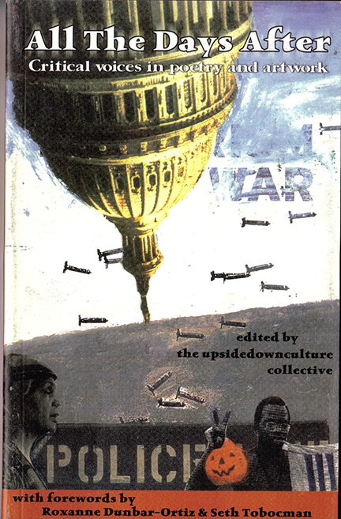
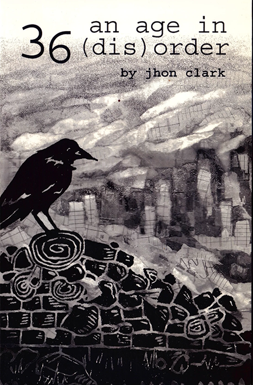
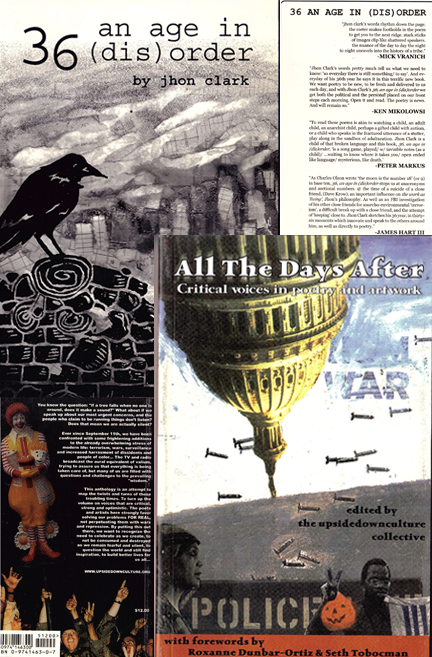
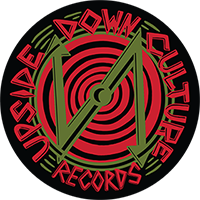
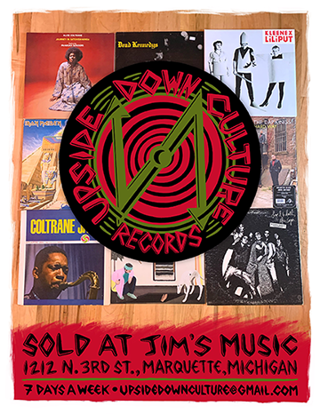
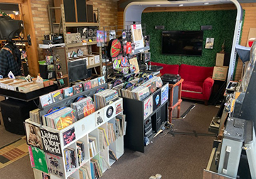

Mutual Support
“Nothing in this world is fixed, everything is constantly moving and that is the joy and vibrancy of being alive.” -Alok
“TO LIVE IS TO BELIEVE.” -Marcel DuChamp
- PLEASE sign up to receive upsidedownculture updates here for the latest content and more.
- Get in touch at any point.
- Participate in the upsidedownculture.org site’s content.
- Go to the COLLABORATORS section to learn more.
A M.A.P. Towards…
To the degree this site is more than an archive of interviews and flyers or a nostalgic stroll down memory lane, I am trying to make it a M.A.P. or “mutual aid project” in and of itself. Admittedly that idea has given me a certain degree of pause. The question of personal capacity and imagined responses from you- perhaps feeling similar regarding capacity or staying connected to something that may feel more about your past than your current life, is the reason for the pause. I get it. However, I do believe this is the time to make more of our collective narrative, pass it forward to help the next generations, and make new connections, so I am going to go ahead and put out some thoughts and options.
First, I would like to offer you who have participated the opportunity to write a blog post in addition to your interview, (which will eventually be included on this site) perhaps following up on anything you previously said, something personal or share a funny story about the old days or who knows?
Also, I would like to share brief descriptions and links to your projects on the “collaborators” page, if you like.
To ex-plex and everyone, I have no interest in roping anyone into anything. If you want to buy something, give, share, connect… for sure I would be thrilled to get support or feedback! Obviously it’s all voluntary yet to have some sense to what degree all this work is reaching others would be amazing. Regardless, for the foreseeable future, onward!
From there maybe grow this into something beyond my personal passion project??
The focus of the updates is basically to let you know every few months or so when new interviews, blog posts, or batches of archival images (like flyers) have been uploaded onto this site. Maybe there will be some exciting announcements from time to time, along with guest writers and alerts as to news to know.
Enter your name and email, and a message if you'd like, and then click on the "Sign Up" button below to receive future updates.
The Trumbullplex.. a unique 30+ year community “project,” has shifted its focus as a Black and P.O.C. led youth/artist group in Detroit. This refined mission deserves support, and I believe the Trumbullplex should live on.
I propose establishing a low-stakes alumni association or “friends of the Tplex” group, pending interest.
Our loose connections can be strengthened into a support network for Trumbull and its community. Those connections are there and they always have been while my personal interest in interviewing former residents and associates has created an opportunity to take a hold of the thread and reconnect. Within the framework of a comfortable amount of formality I think we can stay connected to something bigger without imposing burdens or the pressure of doing more and or becoming more than we already are.
Despite challenges over the years, I believe it’s not too late to collaborate and lift each other up. I hope this work creates opportunities for sharing, engagement, inspiration and helps sustain us through tough times.
Again, I would love it if you signed up for updates and if you are interested in this proposal please indicate on the form.
Jhon Clark
If you're interested in the project, ever lived at or visited the Trumbullplex, have any questions or concerns or have a story to share - please reach out!

All The Days After
Compiled and Edited by UpsideDownCulture Collective
$13
Self published, 2003, 125 pages. Introduction by Seth Tobocman and Foreword by Roxanne Dunbar-Ortiz! Inspiring and informative of a time, using humor and heartfelt expressions of both sorrow and anger; a creative act of raising up our collective voices in resistance to injustice and inhumanity. The contents feel all too relevant decades later. Price includes USPS shipping.

36 an age in (dis) order
by Jhon Clark
$13
Poetry. Self published, 2008, 65 pages. My 36th year is a cathartic exploration within 36 poems that struggle with loss/grief, The State, Detroit and community, via a process of moving away from and through the grip of fear into an embrace for living, loving and carrying on. Price includes USPS shipping.

All The Days After & 36 an age in (dis) order
Compiled and Edited by UpsideDownCulture Collective/By Jhon Clark
$25
Get both books. See description for each above. Price includes USPS shipping.

Turntable Slip Mat
Upside Down Culture Records Logo
$13
Printed on felt at Repeater Press in Marquette, MI. Price includes USPS shipping.
This is a passion project with travel expenses, technical support, web, domain and storage costs, hosting as well as other costs that are funded through my record store hustle, the site’s store, selling my things and donations. If you would like to help thank you, and if you have any questions please don’t hesitate to get in touch. Otherwise I really hope you get something from this and sign up for the newsletter!

Brick and Mortar Store
At Jim's Music in Marquette, MI I have a small well curated record store where you are free to browse and listen to records. I am usually buying or interested in talking to you if you have a collection you are thinking of donating or selling. There is a very nice collection of 45’s as well as large sections of Beatles, Zappa, the Dead, Neil Young and stuff like that and then a bit of everything... Please hit me up if you are looking for something in particular, specific or just something new and exciting!
Jim's Music hosts my UpsideDown Culture record listening parties where you will usually find me spinning a lot of classic and soul, funk and obscure music for us weirdos. If you are interested in attending, check out our Events page for upcoming parties. Jim’s Music is open 7 days a week! Jim’s truly has an excellent selection of guitars and amps and is a full service music store with exceptional lutherie work available. Jim’s is a great partner to work with and is located at 1212 N 3rd St in Marquette.
We also sell records online through Discogs. The inventory at Jim's Music and the online store is different - if you would like a complete inventory list please contact me.
Upside Down Culture Records